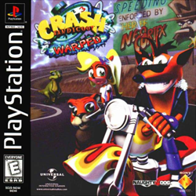
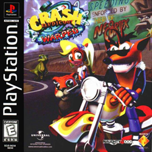

Saga do Crash Bandicoot
Crash Bandicoot é uma série de jogos criada por Andy Gavin e Jason Rubin que são inclusive os fundadores da Naughty Dog. A série consiste basicamente nas aventuras do bandicoot geneticamente alterado Crash que luta para impedir os planos do cientista do mal Neo Córtex e seus lacaios. A história do jogo se passa nas fictícias Ilhas Wumpa, um arquipélago situado na costa noroeste da Austrália, mas outros lugares são revelados. A série começou em 1996 e no momento, a franquia contém um total de 18 jogos diferentes. A série se tornou tão popular, que uma nova espécie de bandicoots fossilizado foi nomeada literalmente como Crash bandicoot.


 
